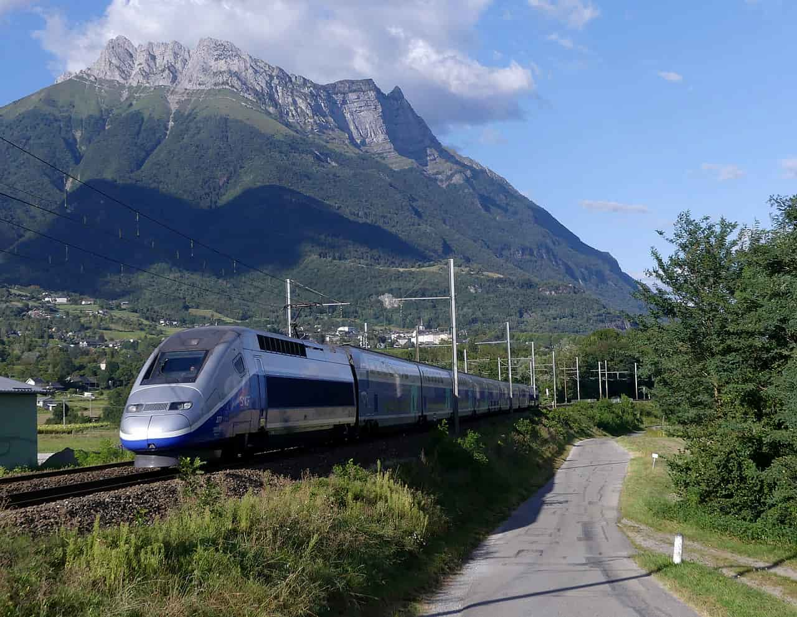
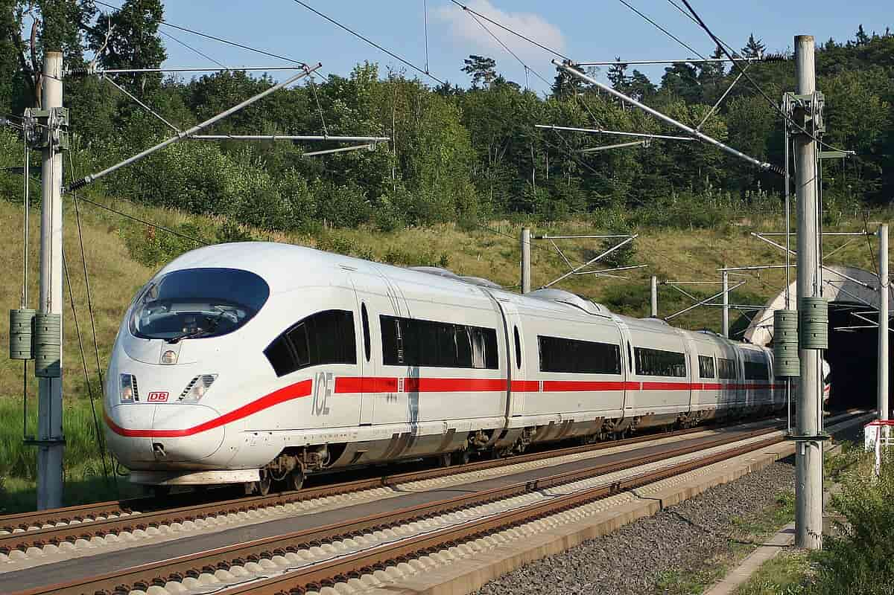
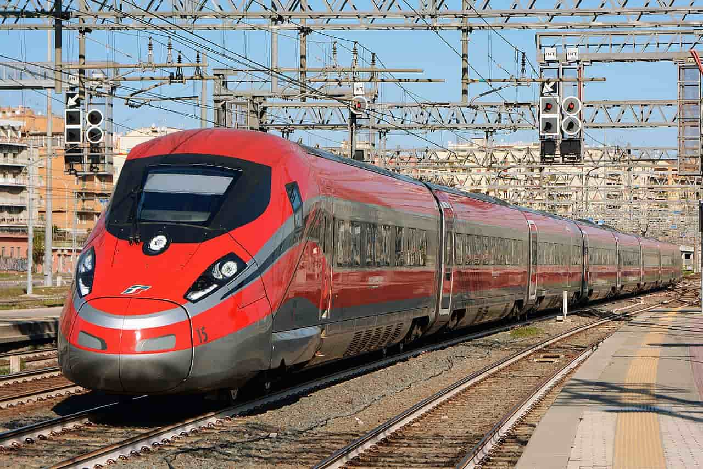
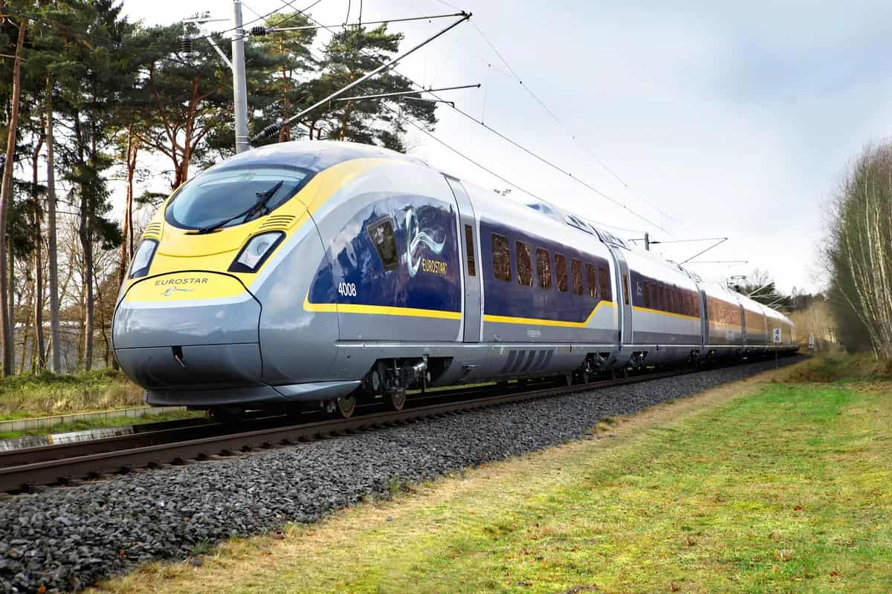
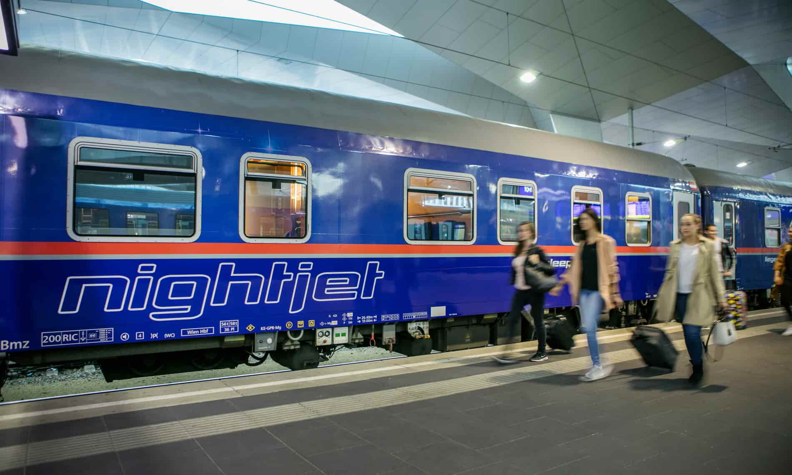

Meet Our Trains: The European Travel Fleet
Embark on a journey across the railways of Europe. The quality of your trip starts with the right train. Discover the 6 most important models that connect cities and landscapes with high speed and comfort.
TGV Duplex (Train à Grande Vitesse)

The TGV Duplex is France's highest-capacity high-speed train, designed with two decks to maximize the number of passengers on high-demand routes. Manufactured by Alstom, it is the backbone of SNCF's high-speed services and essential for long-distance international routes, such as Paris to Barcelona and Paris to Geneva. Its two-story construction not only increases capacity but also offers passengers panoramic views, especially on the upper deck. While it is a passenger train, its high power allows it to maintain impressive speeds of up to 320 km/h, connecting Western Europe quickly and efficiently.
Technical Details:
- Main Routes: France (Paris-Marseille, Paris-Lyon, etc.), International Routes (Spain, Switzerland).
- Maximum Service Speed: 320 km/h.
- Passenger Capacity (Approx.): 510 passengers.
- Special Features: Double-decker (Duplex) design for maximum capacity.
- Manufactured In: France (Alstom).
🇩🇪 ICE 3 (Intercity-Express)

The ICE 3 is Germany's fastest and most technologically advanced series, operated by Deutsche Bahn (DB). Its distinctive feature is distributed propulsion, meaning the motors are spread throughout the train, rather than concentrated in a single locomotive. This allows for quicker acceleration and a higher top speed. Furthermore, the ICE 3 features a lounge area behind the driver with a glass wall, providing passengers with a direct view of the track ahead. It is vital for domestic high-speed routes and international connections to the Netherlands and Belgium.
Technical Details:
- Main Routes: Germany (Frankfurt-Cologne), International Routes (Brussels, Amsterdam).
- Maximum Service Speed: 300 km/h (some versions up to 330 km/h).
- Passenger Capacity (Approx.): 450 passengers.
- Special Features: Distributed Propulsion and Panoramic View in the driver's lounge.
- Manufactured In: Germany (Siemens Mobility).
🇮🇹 Frecciarossa 1000 (V300 Zefiro)

The Frecciarossa 1000 (Red Arrow) is the crown jewel of the Italian high-speed network, operated by Trenitalia. Considered one of Europe's fastest and most sustainable trains, it was designed for interoperability across the entire European high-speed network, meeting all noise and safety requirements. Its construction is focused on comfort, energy efficiency, and low carbon emissions. Its maximum operating speed makes it the ideal train for connecting key Italian cities like Milan, Rome, and Naples, drastically reducing travel times.
Technical Details:
- Main Routes: Italy (Milan-Rome-Naples-Salerno).
- Maximum Service Speed: 360 km/h.
- Passenger Capacity (Approx.): 457 passengers.
- Special Features: Italy's fastest and quietest production train, with high energy efficiency.
- Manufactured In: Italy (AnsaldoBreda and Hitachi Rail).
🇬🇧🇫🇷🇧🇪 Eurostar e320

The Eurostar e320 is the train that connects the United Kingdom with continental Europe (France, Belgium, and the Netherlands) via the Channel Tunnel. Its name, e320, reflects its maximum service speed of 320 km/h. As the successor to the first generation of Eurostar, the e320 offers greater capacity and a higher level of onboard comfort, making it crucial for business and leisure travel between London and cities like Paris and Amsterdam. It features a design adapted for the tunnels and a strict safety standard required for the Eurotunnel crossing.
Technical Details:
- Main Routes: London-Paris, London-Brussels, London-Amsterdam (via Eurotunnel).
- Maximum Service Speed: 320 km/h.
- Passenger Capacity (Approx.): 902 passengers.
- Special Features: Designed to cross the Channel Tunnel (Eurotunnel) and comply with specific safety standards.
- Manufactured In: Germany (Siemens Mobility).
Pendolino (Tilting Technology)

Pendolino, which means "small pendulum," is the generic name for a family of high-speed trains that use active tilting technology. This feature allows the train to lean into curves, compensating for centrifugal force and enabling it to travel over conventional rail lines faster than standard trains. This makes it ideal for countries with mountainous topography or older rail networks where building straight, high-speed lines is prohibitive. It is widely used in countries like Italy (ETR 610) and Poland.
Technical Details:
- Main Routes: Various routes in Italy, Poland (Pendolino EIC Premium), Switzerland, Czech Republic.
- Maximum Service Speed: 250 km/h.
- Passenger Capacity (Approx.): 420 passengers (ETR 610 model).
- Special Features: Features an Active Tilting System that allows for higher speed on curves.
- Manufactured In: Italy (Alstom, formerly Fiat Ferroviaria and Alstom Ferroviaria).
Nightjet (Night Trains)

Nightjet is the overnight train service of the Austrian railway company ÖBB, which has become the primary provider of long-distance night travel in Central Europe. Its purpose differs from high-speed trains, focusing on sleeping comfort, offering private sleeping cabins, *couchettes* (basic sleeping berths), and reclining seats. While not the fastest train, it allows passengers to travel long distances overnight, saving daylight time and a hotel night. It is essential for sustainable and leisure travel between distant capitals.
Technical Details:
- Main Routes: Vienna-Rome, Hamburg-Zurich, Berlin-Budapest (covering Central/Eastern Europe).
- Maximum Service Speed: 200 km/h.
- Passenger Capacity (Approx.): Varies (Focused on beds/cabins for sleeping).
- Special Features: Focused on sleeping accommodations (*sleeper/couchette*) for overnight travel.
- Manufactured In: Varies (usually modernized Siemens/ÖBB carriages).